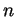

Next: Step 3: From grid
Up: Step 2: From features
Previous: Enforcing symmetry
Contents
Blocks consist of sequences of points in which each point is within
the neighborhood of the previous one.
FISH calculates the size of the neighborhood for all points
based on the total number of points and cells  in the grid.
The probability of a cell containing a point is .
From this, and from an adjustable parameter  (see 3.1),
FISH calculates the size of the neighborhood.
In its current version, FISH measures distance between two points
and
using the Manhattan distance,
.
In order to be considered neighbors, two points must be closer than
(see 3.1),
FISH calculates the size of the neighborhood.
In its current version, FISH measures distance between two points
and
using the Manhattan distance,
.
In order to be considered neighbors, two points must be closer than
root
2003-06-27